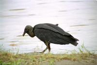
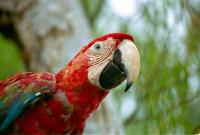
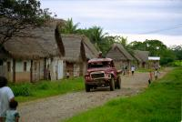
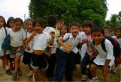

|
Lundi 22 octobre
Petit village amazonien blotti entre les colines recouvertes de forêts et le
Rio Béni, Rurrenabaque est plein de charme et d'exotisme pour nous avec ses
maisonnettes de bois ou de pisé au toit de paille, ses rues de terre battue
boueuses et ses habitants charmants. Partout des cocotiers et arbustes fleuris
de jaune, rouge, bleu, mauve. On va voir le Rio Béni. Là, rencontre avec un
genre de vautour noir d'une cinquantaine de centimètres de haut et surtout avec...
3 magnifiques aras longs d'une bonne quarantaine de cm. Le premier est bleu
et jaune et les 2 autres multicolores à dominante rouge. On ne se lasse pas
de les observer. Ce matin, devant notre chambre, on a vu un colibri minuscule
qui butinait en battant frénétiquement des ailes. On ne les voyait plus tellement
elles bougeaiant vite, seul son corps quasi immobile restait visible. Génial!
Puis on voit, perché sur un cocotier, un perroquet tout vert... très bavard!
Il est domestique mais totalement libre. Et il parle! Il nous raconte plein
de trucs, mais on ne comprend pas tout. Ce doit être l'accent! Ensuite, on rencontre
un groupe de jeunes écoliers avec leur maîtresse. Ils veulent qu'on les prenne
en photo. 5, 10, 20, à la fin ils sont 25 ou 30 à se bousculer pour être au
plus près de l'objectif! Ca faisait longtemps qu'on ne nous avait pas demandé
d'être pris en photo. Puis tout contents, ils repartent non sans nous dire "adios"
et en agitant les mains. Au revoir les petits!
Mardi 23 octobre
A 7H30 on est debout. A 8H00 on va dire bonjour aux perroquets. A 8H30 c'est
parti pour la pampa! Avec 4 anglais et 1 allemand, on sue dans la jeep jusqu'à
Santa Rosa, un joli petit village à trois heures et demie de Rurrenabaque. Sur
la route, on croise plein d'oiseaux, des hérons, des ibis, des aras, des marabouts...
Après le déjeuner, on va au lac qu'il faut traverser ne pirogue. Dedans, des
alligators et des piranhas, plein... Et il faut se déchausser et marcher dans
l'eau jusqu'aux genoux pour rejoindre la pirogue à 20 mètres de là!!! On recompte
nos orteils, ouf! Toujours 10 chacun. On a lâché les 5 autres au déjeuner. On
est donc seuls, peinards avec notre guide Madrigo. Parce que nous, on va faire
du cheval dans la pampa amazonienne! Hé oui, on est de gros aventuriers et on
n'a même pas peur d'avoir mal aux fesses! De l'autre côté du lac, une trentaine
d'estancias pour une trentaine de familles. Culture de maïs, de riz, de patates,
élevage de poules, de cochons, de bovins, de chevaux et pêche. Ce n'est pas
pour exporter, c'est pour vivre et troquer. Ils se complètent ainsi.
On va dormir dans une estancia. Les gens sont charmants, il y a 6 chiens et
5 ou 6 gamins dont juste une fille d'une quinzaine d'années. La mère n'a pas
l'air d'avoir plus de 35 ans. L'école est à une heure de là, gratuite en théorie,
comme partout en Bolivie. On dormira dans la maison en torchis et toit de paille,
on se lavera à l'eau du puits et on montera sur le trône de planche nous soulager
dans le trou d'où tout tombera d'un mètre cinquante de haut. Ca ne sent même
pas.
Allez, on va pêcher le dîner. En traversant le bois pour rejoindre le lac,
on voit plein de toucans. Magnifiques, exceptionnels. Petits (la moitié de ceux
d'Iguazu), ils sont très colorés, si colorés que j'en mélange les couleurs.
C'est uen autre espèce qui vit en bande et non en couple comme leurs camarades
plus gros. On remonte dans la pirogue, on s'éloigne dans le lac aux eaux boueuses.
On dérange au passage un aligator d'environ deux mètres!!! On prend nos hamecons
et on appâte avec... un morceau de viande. Ben oui, c'est le piranha qu'on va
pêcher, pas la truite.
En bons amis des bêtes, Lionel ne pêche rien malgré ses nombreux et excellents
lancers et moi, j'ai tout de même réussi à attrapper la ligne d'un autre pêcheur
(un pote de Madrigo) et à nourir un piranha parti avec la viande sans l'hamecon.
Ce n'est pas avec cela qu'on va se nourrir! Heureusement le petit gars de la
famille en a attrappé 4 et un autre pote de Madrigo en a pris 1. On les goûte
au dîner, c'est bon, croustillant, la plupart des arêtes se mangent, c'est plein
de calcium. Dîner en famille, on se poile bien dans cette case réservée à la
cuisine, à la lueur des bougies. Ils sont vraiment très accueillants, chacun
y va de ses histoires et blagues. Un bon moment quoi. Puis, on regarde les étoiles
adossés à NOTRE maison sous les cocotiers et les palmiers en ombres chinoises
où volent les lucioles. On se couche sous NOTRE toit de chaume pour écouter
le concert de la nuit. Les grenouilles, les oiseaux et tous les insectes.
Suite du voyage : Pirogue en Amazonie
|

Bolivie
Rurrenabaque
|

Bolivie
Rurrenabaque
|
Bolivie
Rurrenabaque
|

Bolivie
Rurrenabaque
|

Bolivie
Rurrenabaque
|
|
|